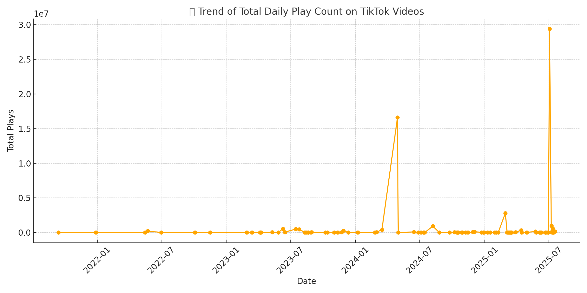

使用 Apify TikTok Scraper 工具，抓取 TikTok 上话题 #bearelectric 的 20 条视频数据，导出为 CSV 并进行数据分析。
下图为视频文案ä¸çš„高频英文关键è¯è¯äº‘，åæ˜ å†…å®¹è¥é”€çš„主è¦å…³æ³¨ç‚¹ï¼š
下图展示了å„日期下的视频æ’放总é‡å˜åŒ–趋势，有助äºåˆ¤æ–çƒåº¦çˆ†å‘节点：
| # | 描述片段 | æ’æ”¾é‡ | ç‚¹èµ | 评论 | 分享 | é“¾æ¥ |
|---|---|---|---|---|---|---|
| 1 | 例：Bear mini rice cooker review... | 100,234 | 3,201 | 188 | 55 | 查看视频 |
✨ 本页面由 MileyIsMe 使用 Python 和 HTML 自动生成，用于展示 TikTok 数据分析项目成果，可托管于 GitHub Pages。
This project uses Apify's TikTok Scraper to collect 20 videos under the hashtag #bearelectric. The dataset was exported as CSV for further analysis.
The word cloud below shows the most frequent keywords appearing in video descriptions. It reflects the main themes of TikTok content marketing.
The chart below illustrates the total daily play count over time, helping identify when content gained traction.
The following table lists the top-performing videos ranked by play count.
| # | Description | Plays | Likes | Comments | Shares | Link |
|---|---|---|---|---|---|---|
| 1 | Example: Bear mini rice cooker review... | 100,234 | 3,201 | 188 | 55 | View Video |
✨ This page was auto-generated by MileyIsMe using Python and HTML. It presents a project analyzing TikTok-driven market penetration of young Chinese brands in the U.S. and is ready for GitHub Pages deployment.